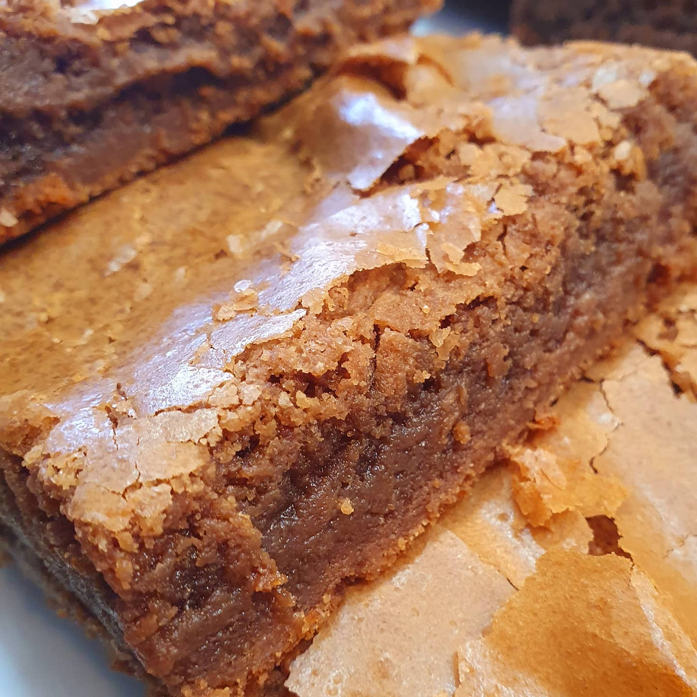

Homemade Brownie
This is an easy level recipe that can be done by children.
I use to own a bakery called "Yalla" and Pedro was one of our customers
He always used to say that this was the best brownie ever.
So, let's see step by step how to make this sweet and yummy brownie!

Homemade Brownie Ingredients
- 116g butter
- 166g semi sweet chocolate chips
- 350g granulated sugar
- 3 whole eggs
- 230g all-purpose flour
- a pinch of salt
Step by Step to The Perfect Brownie
- Preheat the oven to 170°C.
- Lightly spread a little bit of cooking oil line an baking pan with parchment paper.
- In a medium bowl, combine the flour and salt.
- In a large bowl, whisk together the eggs and sugar.
- In a medium high heat, melt the butter and chocolate chips together, than let ir cool just for a minute.
- First mix the wet ingredients and than add the flour and salt, together until just combined.
- Pour the batter into the prepared pan and use a spatula to smooth the top.
Bake for 40 to 48 minutes, or until a toothpick comes out with only
a few crumbs attached (note: it's better to pull the brownies out early
than to leave them in too long). Cool completely before slicing.